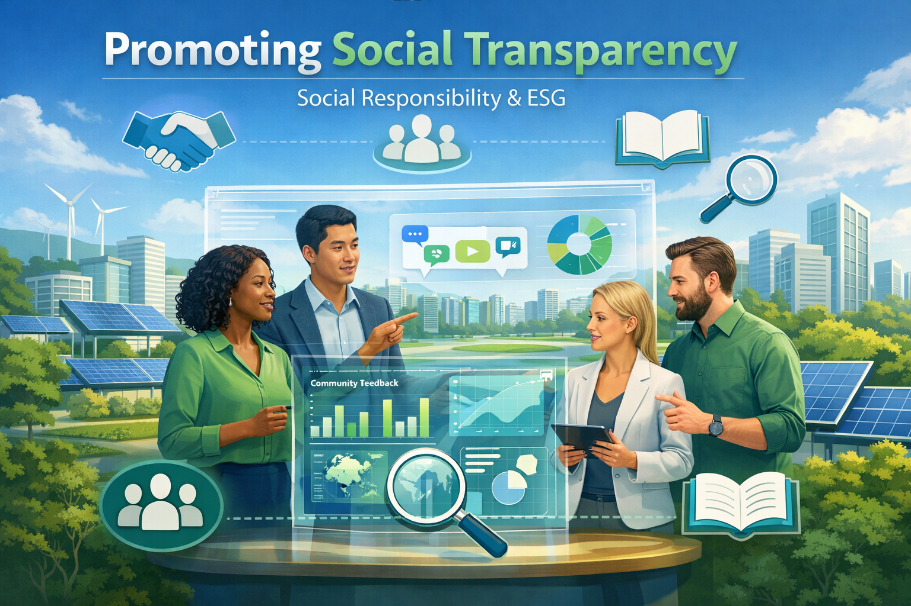
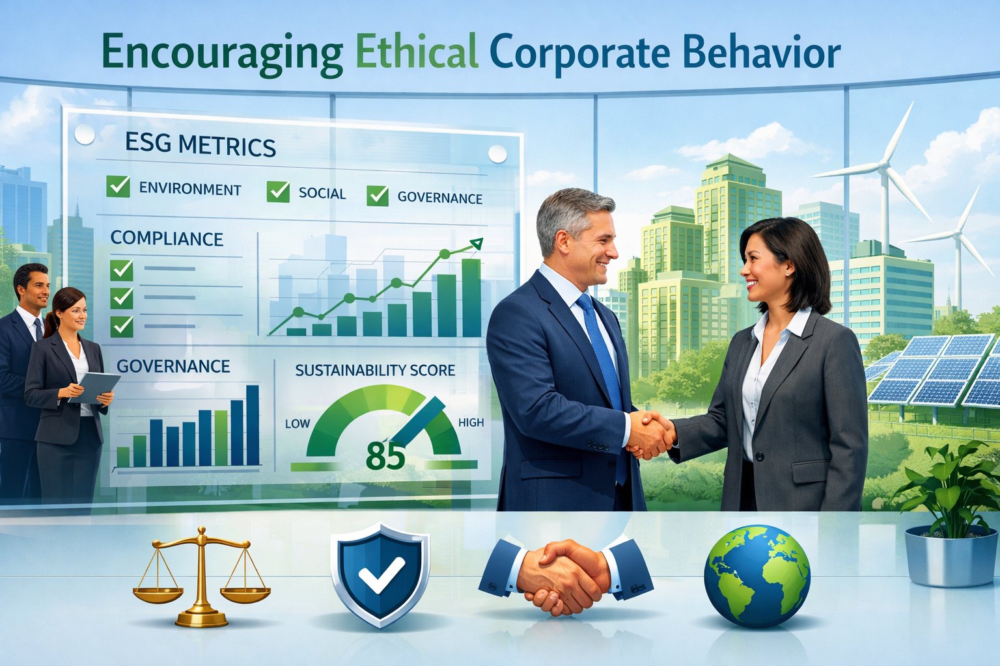
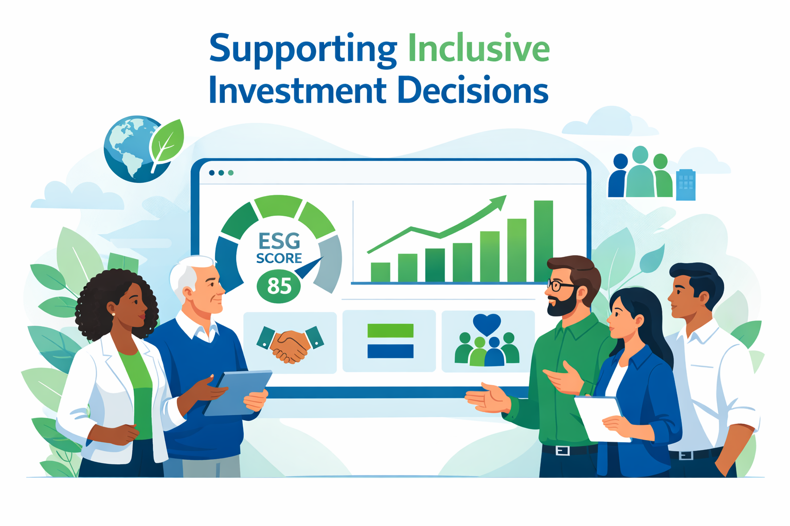
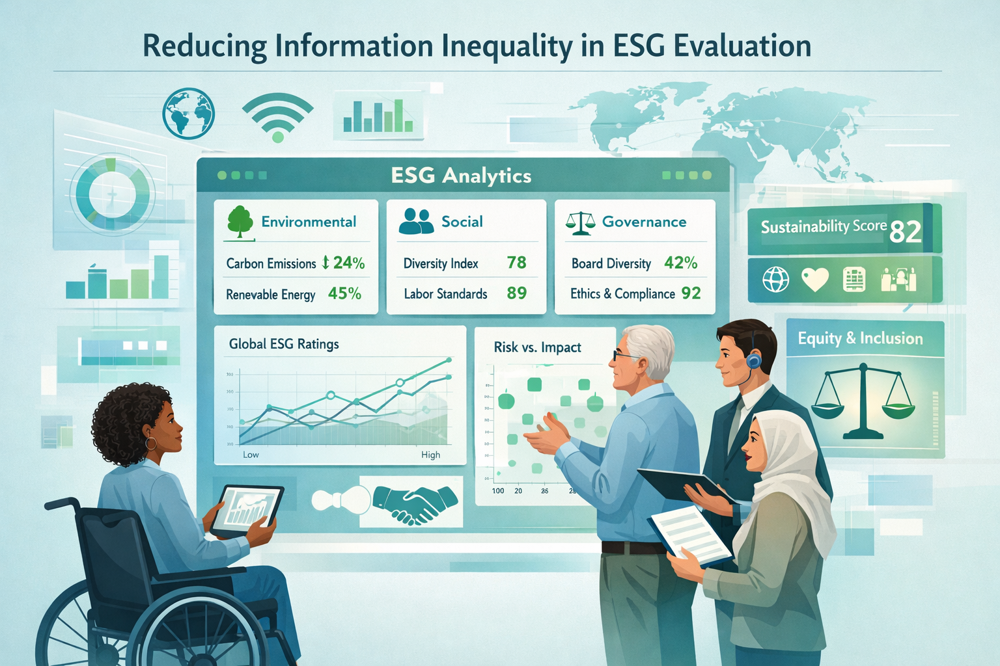
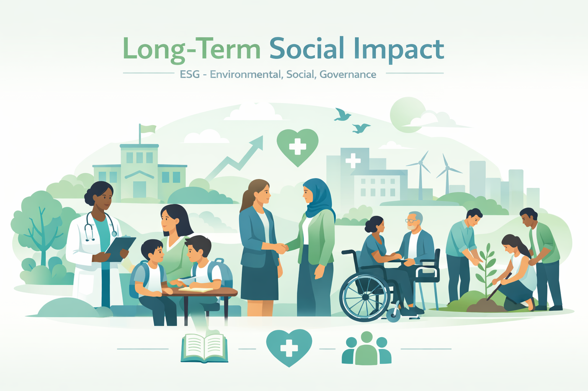

Driving Sustainable Futures with ESG Data and Sentiment Analysis
Unlock comprehensive sustainability reporting and insights to make informed decisions.
Explore Metrics Book a DemoHow ESG Intelliscore strengthens your strategy:
🔍
One source of truth for all your scope 1, 2 and 3 GHG emissions.
🛡️📄
Organize data collection with multiple layers of verification and approval.
🛡️
Manage data workflows and accuracy with role-based permissions.
⚙️
Calculate carbon impact from multiple sources and units.
🛡️🔑
Auditor-access permissions to simplify any audit.
Sustainability Metrics
Social Responsibility
Monitor diversity, employee well-being, and community engagement.
Data: 85% diversity score, 90% employee satisfaction.


Sustainability Reporting
Generate detailed reports with real-time data from trusted sources. Integrate with your systems for seamless ESG compliance.

Book a Demo / Generate Predictive Report
Enter parameters below to instantly build an updated ESG analysis sheet.
Social Impact of ESG IntelliScore
Understanding Our Social Responsibility
ESG IntelliScore is designed to promote social responsibility by transforming unstructured information such as news articles, corporate disclosures, and public sentiment into meaningful ESG insights using sentiment analysis and data-driven evaluation. By doing so, the platform supports investors, organizations, and regulators in making ethical, inclusive, and socially responsible decisions that positively influence communities and society at large.
How ESG IntelliScore Supports Social Responsibility

1. Promoting Social Transparency
ESG IntelliScore converts qualitative social information — such as labor practices, diversity initiatives, workplace safety records, and community engagement efforts — into measurable insights. This transparency reduces information gaps and helps stakeholders better understand how companies impact employees, consumers, and communities.
2. Early Detection of Social Risks
By analyzing sentiment from company-related news and disclosures, ESG IntelliScore can identify early warning signals such as labor disputes, discrimination allegations, unsafe working conditions, or community conflicts. Detecting these issues early allows organizations to address concerns proactively before they escalate into larger social crises.

3. Encouraging Ethical Corporate Behavior
When companies understand that their social practices influence ESG evaluations and investor perception, they are incentivized to maintain ethical standards. ESG IntelliScore reinforces the importance of fair labor policies, diversity and inclusion initiatives, employee welfare, and community development programs.

4. Supporting Inclusive Investment Decisions
Social scores generated by ESG IntelliScore help investors allocate capital toward companies that demonstrate strong social responsibility. This encourages financial markets to reward organizations that prioritize employee rights, customer protection, data privacy, and social equity.

Reducing Information Inequality in ESG Evaluation
Traditional ESG analysis is often accessible only to large institutional investors with advanced research capabilities. ESG IntelliScore provides a digital, automated approach that democratizes access to ESG insights. By making socially relevant information measurable and accessible, the platform empowers retail investors and smaller stakeholders to make informed decisions.

Long-Term Social Impact
By enhancing transparency, improving accountability, and promoting socially responsible investment behavior, ESG IntelliScore contributes to long-term social development. Although the platform does not directly change social conditions, it influences corporate behavior and investment patterns that can lead to improved labor standards, stronger governance, safer workplaces, and more equitable community engagement.
Our Commitment
ESG IntelliScore is committed to continuously improving the fairness, transparency, and reliability of its social impact analysis. As the platform evolves, it will prioritize ethical AI practices, unbiased data processing, and responsible reporting to ensure that technology supports positive societal progress.
Thanks for visiting us.